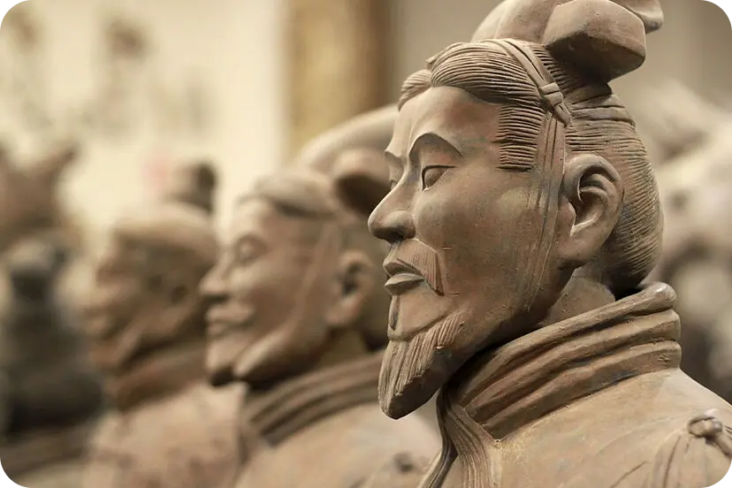

Los guerreros de terracota
Se trata de un tipo de arte funerario enterrado en una formación de batalla compuesta por tres fosas de entre cuatro y ocho metros de profundidad, situadas a un kilómetro y medio al este de la tumba del emperador, y a unos 35 km al este de Xi'an, como parte del Mausoleo de Qin Shi Huang.
Las figuras fueron descubiertas por agricultores locales durante unas obras para el abastecimiento de agua, el 2 de febrero de 1974 cerca de Xi'an (provincia de Shaanxi, República Popular China). Según estimaciones de 2007, entre las tres fosas había figuras de más de 8000 soldados construidos a tamaño ligeramente superior al natural, una caballería de 150 animales y 130 carros tirados por otros 520 caballos, aunque también se encontraron otras figuras no militares, como funcionarios, acróbatas, forzudos y músicos.

Paleta de colores
Originalmente pintados con colores vivos como rojo, azul, púrpura, verde y negro:
- Rojo representando la vida y también la autoridad del ejército.
- Azul representando inmortalidad y nobleza espiritual.
- Verde representaba vitalidad y renovación.
- Negro en un contexto militar podría representar autoridad y disciplina.
- Purpura significaba riqueza, estatus elevado y prestigio, debido a su rareza en aquella época.
aunque hoy en día se conservan en su color marrón terroso por la pérdida de pigmentos.
Símbolos representativos
Representan la grandeza del primer emperador de China Quin Shi Huang, además de su deseo de mantener el poder más allá de su existencia terrenal, por lo tanto simbolizan la fuerza militar y la mortalidad al creerse que las figuras acompañarían al emperador en el más allá.
Preferencias de diseño y estética visual
Realismo y detalle individualizado debido a que cada rostro en los guerreros es diferente, uso de escala humana y disposición militar organizada; refleja la importancia del ejército en la identidad cultural china.
